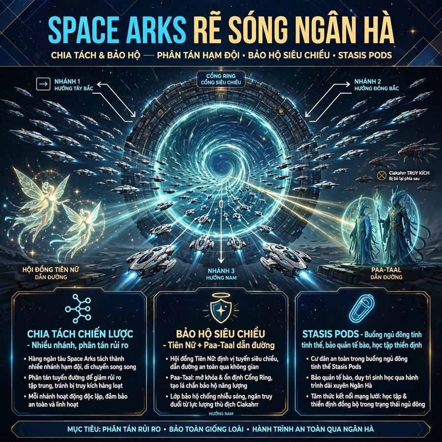
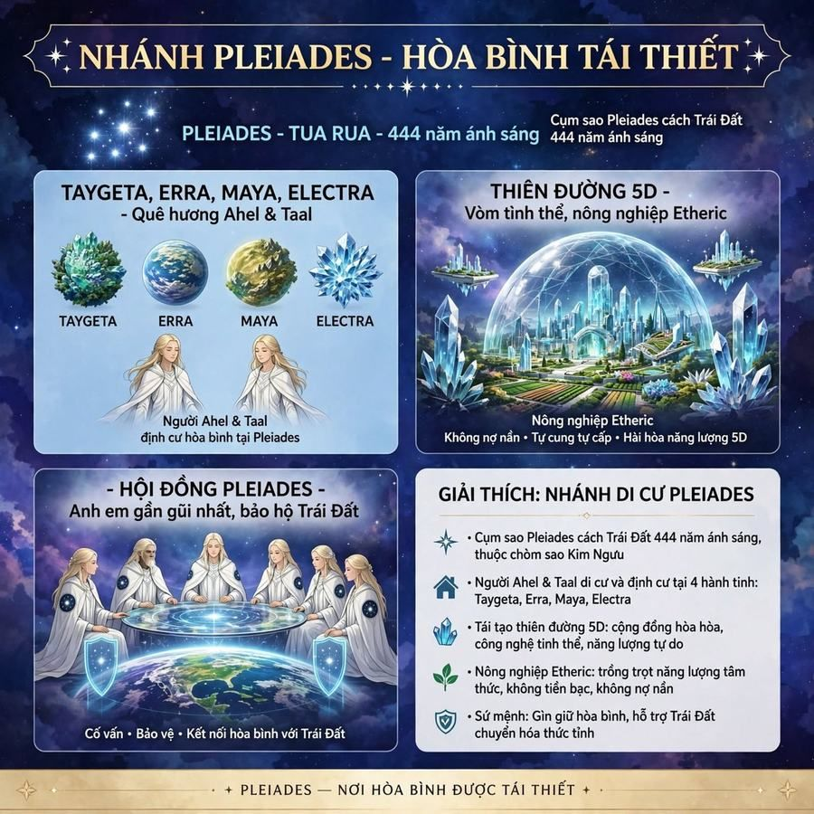
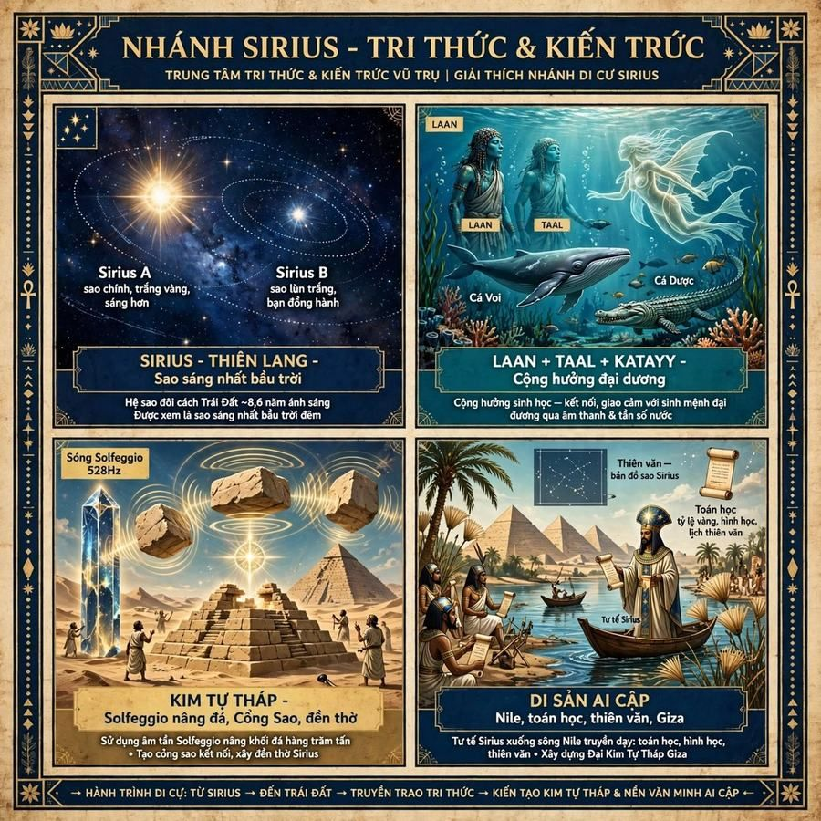
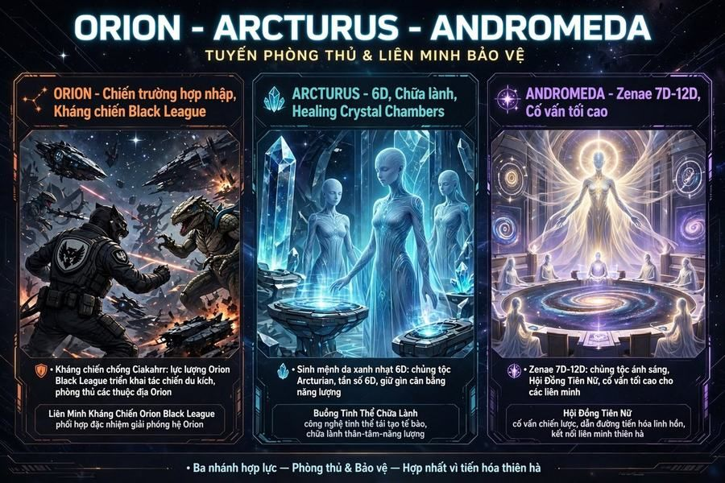
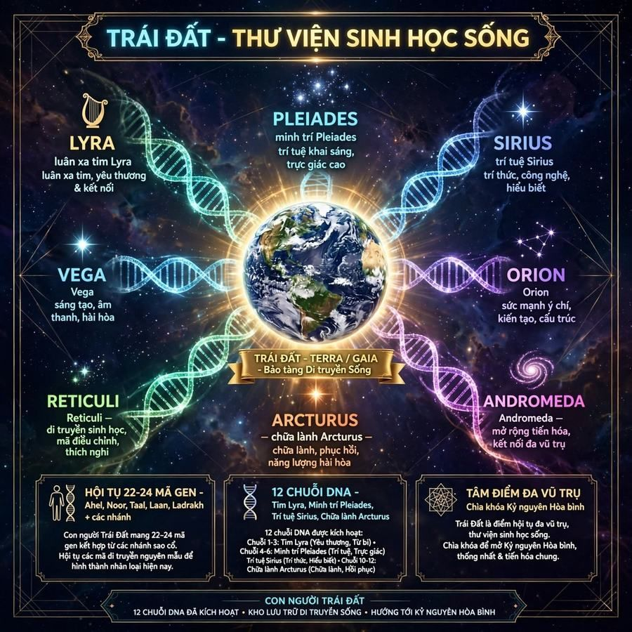
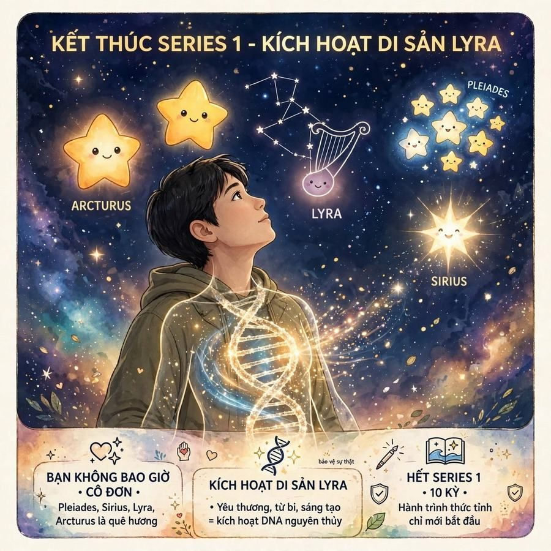

Trang chủ / Chuyên đề 1: Tiền Sử Thiên Hà / Kỳ 10
Chuyên đề 1 · Kỳ 10 / 100
CUỘC ĐẠI DI TẢN RỜI NÔI LYRA & SỰ KHỞI ĐẦU CỦA CUỘC ĐẠI DI CƯ (THE GREAT EXPANSION)

Vậy là hành trình 10 kỳ của chuyên đề 1: Tiền Sử Thiên Hà — Kỷ Nguyên Vàng Lyra & Nguồn Gốc Loài Người đã đi đến chặng đường khép lại.
Chúng ta đã cùng nhau quay ngược dòng thời gian về hàng triệu năm trước, chứng kiến khoảnh khắc dải ý thức Toàn Thể đi qua Lăng Kính Lyra, khám phá bản thiết kế 12 chuỗi DNA của Các Đấng Sáng Lập Paa-Taal, chiêm ngưỡng môi trường thiên đường tại Hệ Sao Man (Kepler-62), thấu hiểu 5 chủng tộc khởi nguyên (Ahel, Noor, Taal, Laan, Ladrakh), tìm hiểu Kỷ nguyên Vàng 40 triệu năm, sự mở rộng sang hệ sao Vega (Olmeeka), thảm họa không-thời gian trên Apex, sự xuất hiện của Đế chế Bò sát Ciakahrr và cuộc chiến tàn khốc đã thiêu rụi nôi tổ tiên.
Nhưng trong dòng chảy vĩnh hằng của Đa Vũ trụ, sự kết thúc của một kỷ nguyên cũ cũng chính là sự khởi đầu cho một chương sử mới tráng lệ hơn.
Khi các hành tinh tại hệ sao Man chìm trong khói lửa và hàng nghìn con tàu Hòm Không Gian (Space Arks) cất cánh đâm xuyên qua Cổng Sao Tinh Vân Ring, một trang sử vĩ đại mới đã chính thức mở ra: Cuộc Đại Di Cư (The Great Expansion) — hành trình đưa hạt mầm di truyền loài người lan tỏa ra khắp mọi ngóc ngách của dải Ngân Hà!
Hàng tỷ cư dân Lyra tị nạn đã tiến về đâu? Sự hình thành của các nhánh văn minh huyền thoại tại Pleiades, Sirius, Orion, Arcturus và Andromeda diễn ra như thế nào? Và lý do tại sao Trái Đất (Terra) lại được chọn làm "Điểm Hội Tụ Tối Thượng" — nơi lưu giữ Thư viện Sinh học Sống của toàn bộ Đa Vũ trụ?
Hãy cùng dấn thân vào Kỳ 10 (Kỳ Cuối): Cuộc Đại Di Tản Rời Nôi Lyra & Sự Khởi Đầu Của Cuộc Đại Di Cư để hoàn tất trọn vẹn bức tranh tiền sử thiên hà!
✦ ✦ ✦1. CÁC CON TÀU HÒM KHÔNG GIAN (SPACE ARKS) VÀ HÀNH TRÌNH RẼ SÓNG NGÂN HÀ
Khoảnh khắc hàng nghìn con tàu Space Arks đồng loạt kích hoạt động cơ từ trường, xé rách vách ngăn không gian để tiến vào Cổng Sao Ring Nebula được ghi nhận là hình ảnh đẫm nước mắt nhưng cũng đầy kiêu hãnh nhất của gia đình hình người.
A. Sự Chia Tách Của Các Đoàn Tàu Di Tản
- Các Hướng Đi Chiến Lược: Khi bước qua Cổng Sao Tinh vân Ring, đoàn tàu tị nạn Lyra không di chuyển cùng về một hướng. Họ chia thành nhiều nhánh hạm đội lớn để phân tán rủi ro, tránh sự truy kích của hạm đội Bò sát Ciakahrr và tìm kiếm các hệ sao mới phù hợp với đặc tính sinh học của từng chủng tộc.
- Tinh Thần Di Truyền Cố Kết: Dù chia tách địa lý, các đoàn tàu vẫn duy trì sự kết nối thần giao cách cảm và hứa nguyện sẽ luôn hỗ trợ nhau, bảo tồn mã di truyền 12 chuỗi DNA và duy trì bản sắc từ bi của gia đình Lyra.
B. Sự Bảo Hộ Của Các Sinh Mệnh Tiên Nữ & Đấng Sáng Lập
- Hành Trình An Toàn Trong Vũ Trụ: Trên suốt hải trình liên sao dài hàng ngàn năm ánh sáng, các đoàn tàu Space Arks nhận được sự hộ phong và dẫn đường từ các sinh mệnh siêu chiều thuộc Hội đồng Tiên Nữ (Andromedan Council) và Liên minh Các Đấng Sáng Lập Paa-Taal.
- Nuôi Dưỡng Trong Các Buồng Tinh Thể: Hàng triệu cư dân đã trải qua quãng thời gian du hành dài bằng cách nằm trong các buồng ngủ đông tinh thể (Stasis Pods), nơi tế bào sinh học được bảo quản hoàn hảo và tâm thức của họ được kết nối trong các không gian giả lập để tiếp tục học tập, thiền định.

2. NHÁNH DI CƯ PLEIADES (TUA RUA) — NƠI HÒA BÌNH ĐƯỢC TÁI THIẾT VÀ BẢO TỒN
Cụm sao Pleiades (chòm sao Tua Rua / Thất Tinh) nằm cách Trái Đất khoảng 444 năm ánh sáng là điểm dừng chân quan trọng và đông đảo nhất của nhánh di cư Lyra.
A. Sự Cải Tạo Môi Trường Tại Hệ Sao Taygeta, Maya & Electra
- Quê Hương Mới Của Người Ahel & Taal: Nhánh cư dân Ahel (tóc vàng/da trắng) và người Taal đã chọn các hành tinh thuộc hệ sao Taygeta (như hành tinh Erra), Maya và Electra làm nơi dừng chân.
- Tái Tạo Thiên Đường Lyra: Với tri thức kỹ thuật và tình yêu thiên nhiên, người Pleiadians đã biến các hành tinh tại Pleiades thành những thế giới thiên đường 5D rực rỡ. Họ xây dựng các đô thị vòm tinh thể hòa lẫn vào thiên nhiên xanh mướt, phát triển mô hình nông nghiệp Etheric không nợ nần và xây dựng một xã hội tràn ngập nghệ thuật, âm nhạc và triết học.
B. Sự Ra Đời Của Hội Đồng Pleiades (Pleiadian Council)
- Những Người Anh Em Gần Gũi Nhất Của Con Người: Người Pleiadians thành lập Hội đồng Pleiades để quản lý hòa bình và bảo vệ cụm sao. Do mang dòng máu di truyền trực tiếp từ Ahel và Taal, người Pleiadians sở hữu diện mạo gần như tương đồng hoàn toàn với con người Trái Đất (những người Nordic da trắng, tóc vàng/nâu, mắt xanh).
- Trọng Trách Bảo Hộ Trái Đất: Người Pleiadians luôn coi con người Trái Đất là những đứa em ruột thịt. Trong suốt hàng ngàn năm qua, họ đã tích cực tham gia vào Liên Đoàn Thế Giới Thiên Hà để hỗ trợ nhân loại Trái Đất thức tỉnh nhận thức và bảo vệ chúng ta khỏi sự thao túng tiêu cực.

3. NHÁNH DI CƯ SIRIUS (THIÊN LANG) — TRUNG TÂM TRI THỨC VÀ KIẾN TRÚC VŨ TRỤ
Điểm đến lớn thứ hai của cuộc di cư chính là hệ sao đôi Sirius (Sirius A và Sirius B) — ngôi sao sáng nhất trên bầu trời đêm Trái Đất.
A. Sự Hòa Nhập Của Người Laan & Taal Với Sinh Mệnh Bản Địa
- Quê Hương Mới Của Bậc Thầy Tâm Linh Laan: Nhánh người Laan (Feline-Humanoid) và người Taal đã định cư tại các hành tinh thuộc Sirius A và Sirius B.
- Cộng Hưởng Với Chủng Tộc Katayy & Sinh Mệnh Nước: Tại Sirius, người di cư Lyra đã gặp gỡ và cộng hưởng với chủng tộc Katayy bản địa cùng các sinh mệnh đại dương mang tâm thức cao (như loài Cá Voi và Cá Dược siêu chiều).
B. Trung Tâm Kiến Trúc Kim Tự Tháp & Thần Giao Cách Cảm
- Bậc Thầy Kiến Trúc Tinh Thể: Người Sirius phát triển công nghệ kiến trúc Kim Tự Tháp và biểu tượng hình học thiêng liêng lên tầm bậc tối cao. Họ sử dụng sóng âm Solfeggio để nâng hạ các khối đá nặng hàng trăm tấn, xây dựng nên mạng lưới Cổng Sao và các đền thờ năng lượng.
- Di Sản Sirius Tại Ai Cập Cổ Đại: Trong lịch sử Trái Đất, các đoàn tư tế người Sirius từng hạ sơn xuống khu vực thung lũng sông Nile, truyền dạy cho người Ai Cập cổ đại kiến thức về toán học, thiên văn, kỹ thuật ướp xác bảo tồn thể phách và xây dựng Đại Kim Tự Tháp Giza!

4. NHÁNH DI CƯ ORION, ARCTURUS VÀ ANDROMEDA — XÂY DỰNG TUYẾN PHÒNG THỦ & LIÊN MINH BẢO VỆ
Các nhánh di cư khác của Lyra tiến sang các khu vực không gian xa hơn, gánh vác những sứ mệnh vũ trụ đặc thù:
A. Nhánh Orion — Chiến Trường Hợp Nhập Cực Tính
- Thử Thách Tại Hệ Sao Orion: Một nhánh cư dân di cư sang chòm sao Orion. Tại đây, họ phải đối mặt trực tiếp với sự bành trướng của Đế chế Bò sát Ciakahrr và Liên minh Orion tiêu cực.
- Cuộc Kháng Chiến Bất Khuất: Người di cư Lyra tại Orion đã thành lập Liên Minh Kháng Chiến Orion (Orion Resistance / Black League), kiên cường đấu tranh hàng triệu năm để bảo vệ tự do ý chí và tìm kiếm bài học hợp nhập cực tính.
B. Nhánh Arcturus (Hệ Sao Arcturus) — Trạm Năng Lượng Chữa Lành 6D
- Những Thực Thể Ánh Sáng Từ Bi: Nhánh di cư tiến sang hệ sao Arcturus đã nâng cấp nhận thức lên mật độ 6D thuần khiết. Họ phát triển thành chủng tộc Arcturians — những sinh mệnh năng lượng da xanh nhạt, mang trí tuệ chữa lành tâm linh đỉnh cao, vận hành các Buồng Tinh Thể Chữa Lành (Healing Crystal Chambers) giúp thanh lọc tổn thương thể phách cho toàn Ngân Hà.
C. Nhánh Andromeda (Thiên Hà Tiên Nữ) — Các Cố Vấn Tối Cao Zenae
- Hội Đồng Tiên Nữ (Andromedan Council): Một nhóm cư dân Lyra tiến ra khỏi dải Ngân Hà, định cư tại Thiên hà Tiên Nữ (M31) và phát triển thành chủng tộc Zenae. Họ tồn tại ở dải mật độ 7D–12D, đóng vai trò như những cố vấn tối cao, giữ gìn sự cân bằng từ trường và theo dõi sự tiến hóa của toàn bộ các dải sao.

5. ĐIỂM HỘI TỤ TỐI THƯỢNG: TRÁI ĐẤT (TERRA) — THƯ VIỆN SINH HỌC SỐNG CỦA ĐA VŨ TRỤ
Sau hàng tỷ năm di cư qua Pleiades, Sirius, Orion, Arcturus và Andromeda, câu hỏi quan trọng nhất được đặt ra là: Tất cả các dòng di truyền này cuối cùng đã đi về đâu?
Câu trả lời chính là: HÀNH TINH TRÁI ĐẤT (TERRA / GAIA)!
A. Trái Đất — Dự Án Thư Viện Sinh Học Sống (Living Genetic Library)
- Tọa Độ Tối Thượng Của Ngân Hà: Trái Đất sở hữu vị trí địa lý từ trường cực kỳ đặc biệt, được Các Đấng Sáng Lập Paa-Taal chọn làm "Bảo tàng Di truyền Sống".
- Hội Tụ 22 - 24 Mã Di Truyền Thiên Hà: Tất cả các chủng tộc di cư từ Lyra (Ahel, Noor, Taal, Laan, Ladrakh) cùng các nhánh tiến hóa tại Pleiades, Sirius, Orion, Andromeda, Arcturus, Vega, Reticuli... đều đã đóng góp các chuỗi mã gen di truyền của mình vào bộ gen của loài người Trái Đất!
B. Con Người Trái Đất — Tuyệt Tác Di Truyền Đa Chiều
- Chìa Khóa Tối Cao Trong Thể Xác Bạn: Mỗi con người Trái Đất ngày nay mang trong mình bộ gen kết tinh từ 22 đến 24 dòng máu ngoài hành tinh khác nhau!
- 12 Chuỗi DNA Tiềm Năng: Thể xác con người Trái Đất chứa đựng tiềm năng kết nối với toàn bộ các chiều không gian. Bạn sở hữu Luân xa Tim dồi dào cảm xúc của Lyra, sự minh trí của Pleiades, trí tuệ lượng tử của Sirius, năng lực chữa lành của Arcturus và ranh giới sinh tồn kiên cường.
- Chính Vì Vậy Trái Đất Mới Trở Thành Tâm Điểm: Các thế lực tiêu cực khao khát thao túng Trái Đất vì họ sợ hãi sự thức tỉnh của con người; trong khi các liên minh hòa bình bảo vệ Trái Đất vì họ biết rằng con người chính là chìa khóa mở ra Kỷ nguyên Hòa bình vĩnh cửu cho toàn bộ Đa Vũ trụ!

6. KẾT THÚC SERIES 1: KÍCH HOẠT DI SẢN LYRA TRONG TÂM THỨC BẠN
chuyên đề Tiền Sử Thiên Hà (10 Kỳ) chính thức khép lại, nhưng hành trình thức tỉnh của bạn chỉ mới bắt đầu!
- Bạn Không Bao Giờ Cô Đơn: Khi bạn ngước nhìn lên bầu trời đêm, hãy nhớ rằng những vì sao Pleiades, Sirius, Lyra hay Arcturus không phải là những khối đá vô hồn. Đó là quê hương cổ xưa, nơi những người anh em thiên hà đang mỉm cười và dõi theo từng bước tiến của bạn!
- Cảm Nhận Di Sản Trong DNA: Mỗi khi bạn yêu thương, từ bi, sáng tạo nghệ thuật hay kiên cường bảo vệ sự thật, bạn đang trực tiếp kích hoạt lại các chuỗi DNA nguyên thủy mà Các Đấng Sáng Lập đã gửi gắm từ thời Lyra.
